Projetar, Construir, remodelar com compromisso e qualidade.Pretendemos estar um passo à frente no que diz respeito às novas tecnologias na área da engenharia e construção civil.
Porque somos, como ninguém, preocupados com o sucesso de seu negócio e a preservação do seu patrimônio construído.
Porque temos as PESSOAS, as SOLUÇÕES e os PROCESSOS adequados a suas necessidades.
NOSSAS FORÇAS
PESSOAS: uma equipe enxuta, disciplinada, experiente, atualizada através de treinamentos técnicos periódicos, que respeita e prioriza o Cliente e seus valores
SOLUÇÕES: a engenharia voltada à busca de soluções específicas considerando as condições de contorno e as características do Cliente e seu negócio, com a melhor relação custo/benefício
PROCESSOS: o desafio é conseguir com simplicidade a composição mais econômica de recursos e tempo, observando as práticas corretas de engenharia e recursos de produtividade em todas as atividades
Conheça a ONSITE
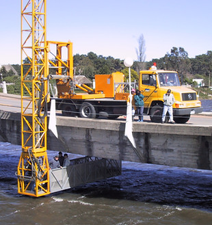
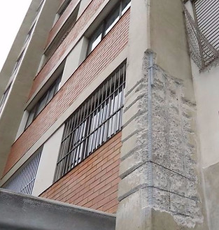
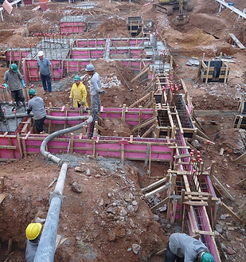
A ONSITE é uma empresa dedicada a serviços especializados no setor da construção civil, destacando-se por sua atuação abrangente desde a sua fundação em outubro de 2003. Inicialmente denominada ONSITE Consultores Integrados, a empresa concentrou seus esforços em serviços de projeto e consultoria na área de patologia das edificações.
Ao longo dos anos, a ONSITE evoluiu e passou por importantes transformações. Em 2016, houve uma fusão estratégica entre a ONSITE Consultores Integrados e a ONSITE Serviços e Obras, consolidando-as sob o nome ONSITE Estruturas. Esse movimento visava fortalecer e unificar suas operações, proporcionando uma abordagem mais integrada e eficiente para atender às demandas do mercado.
A trajetória da ONSITE inclui marcos significativos, como a fundação da LS Estruturas em janeiro de 2005, uma empreiteira inicialmente voltada para recuperação estrutural e impermeabilização. Posteriormente, em novembro de 2014, a ONSITE Serviços e Obras conquistou seu primeiro contrato de construção, liderando o projeto e construção de um Clube de Tênis para uma grande incorporadora.
A empresa também diversificou suas atividades, participando ativamente da fundação da MAKMIX em dezembro de 2012. Especializada no aluguel e manutenção mecânica de equipamentos de construção, a MAKMIX teve sua divisão de bombeamento de concreto incorporada pela ONSITE Serviços e Obras em 2014.
Linha do tempo
Out 2003
A empresa foi fundada com o nome ONSITE Consultores Integrados, focada em serviços de projeto e consultoria na área de patologia das edificações.
Jan 2005
Fundação da LS Estruturas, uma pequena empreiteira com foco em recuperação estrutural e impermeabilização, que mais tarde seria renomeada como ONSITE Serviços e Obras.
Nov 2014
A ONSITE Serviços e Obras fecha o primeiro contrato de construção, responsável pelo projeto e construção de um Clube de Ténis para uma grande incorporadora.
Dez 2012
Com a aquisição de equipamentos, a ONSITE participa da fundação da empresa MAKMIX, especializada no aluguel e manutenção mecânica de equipamentos de construção. A divisão de bombeamento de concreto é absorvida pela ONSITE Serviços e Obras em 2014.
2016
ONSITE Consultores Integrados e ONSITE Serviços e Obras fundem-se em um único nome: ONSITE Estruturas.
Desde 2003 prestamos serviços de projeto e consultoria com conceito de integração de competências em várias especialidades. Contamos com uma equipe de consultores altamente qualificados e atualizados.
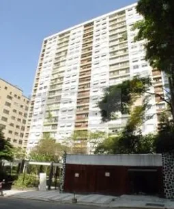
Edifício na Consolação - Projeto de recuperação dos subsolos e marquises
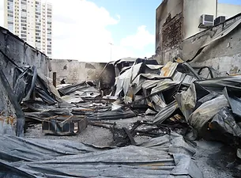
Avaliação de sinistro - Incêndio (Loja de pneus em Sacomã
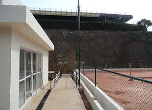
Projeto e execução de clube de tênis - Morumbi
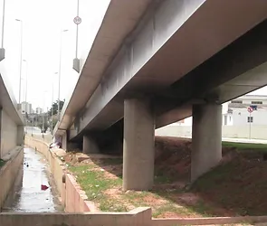
Avaliação de sinistro - Incêndio (Viaduto em São Bernardo do Campo
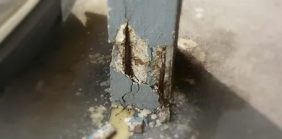
Avaliação de estruturas com corrosão e projeto de recuperação e reforço - Laboratório de ensaios na V. Leopoldina
REFORMAS E OBRAS EM GERAL
Atuando na construção civil, a ONSITE leva consigo a missão de gerar obras de qualidade respeitando os projetos e reduzindo desperdícios. Os projetos de retrofit da ONSITE se caracterizam pela adesão aos objetivos, valores e condições dos clientes.
Estruturas de concreto armado e alvenaria
Estruturas metálicas
Reformas e modernização de edifícios
Reforma e construção de lojas
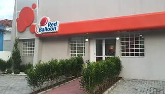
Escola na Lapa - Retrofit com demolição geral e nova construção
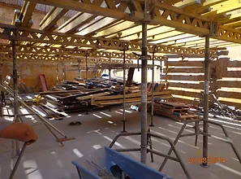
Escoramento de laje a ser acrescentada a prédio corporativo na João Dias (SP)
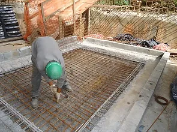
Armação em fechamento de laje de serviço - Morumbi - Execução de estrutura de concreto armado
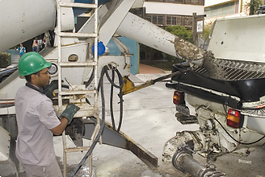
Concretagem em obra nova - Clube de tênis (SP)
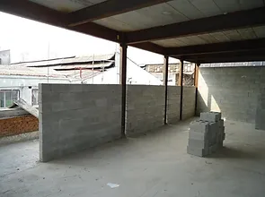
Alvenaria de vedação na João Dias (SP) - ampliação de estrutura
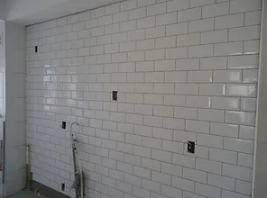
Obra de acabamento em residência em Osasco
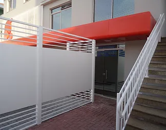
Retrofit em Santana
RECUPERAÇÃO: Reparos e Reforços Estruturais
Serviços que objetivam devolver a edificação ao estado de nova, ou ainda poderão aumentar sua capacidade diante de novas solicitações (reformas e retrofit).
Reparos de elementos de concreto, aço e alvenaria
Reforços estruturais complexos
Reforços de fundação
Tratamento e proteção contra corrosão
Tratamento estético de superfícies de concreto
Tratamento de fissuras e juntas
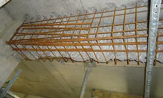
Troca de prumadas e ramais de ferro fundido por pvc. Edifício 13 pav. - Moema
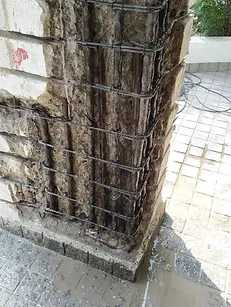
Avaliação, diagnóstico e reparo de Quadro de Transferência em edifício com gerador de substituição total (Condomínio no Tatuapé)
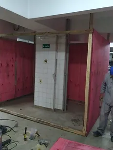
Avaliação, diagnóstico e manutenção de válvulas redutoras do hidráulicas em edifício com sistema de Aquecimento Central (Condomínio no Tatuapé)
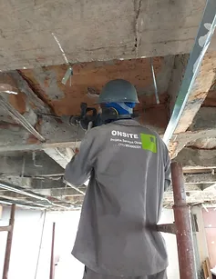
Reparo e modernização de poços de drenagem com quadro de automação (Condomínio em Indianópolis)
ADEQUAÇÃO das INSTALAÇÕES
Adequações às normas do Corpo de Bombeiros e a Normas específicas como a de Desempenho, de Descargas Atmosféricas.
Manutenção e modernização de instalações hidráulicas e elétricas:
Troca de prumadas hidráulicas
Troca de ramais pluviais
Troca e modernização de quadros elétricos
Circuito de carregamento de carros elétricos
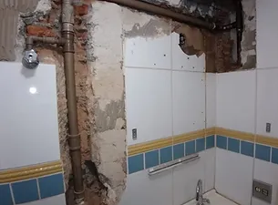
Troca de prumadas e ramais de ferro fundido por pvc. Edifício 13 pav. - Moema
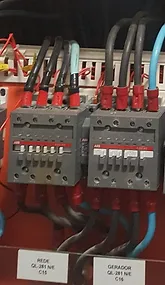
Avaliação, diagnóstico e reparo de Quadro de Transferência em edifício com gerador de substituição total (Condomínio no Tatuapé)
Avaliação, diagnóstico e manutenção de válvulas redutoras do hidráulicas em edifício com sistema de Aquecimento Central (Condomínio no Tatuapé)
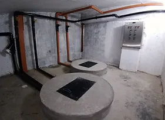
Reparo e modernização de poços de drenagem com quadro de automação (Condomínio em Indianópolis)
Alguns produtos de Projeto e Consultoria:
Projeto de Instalações Elétricas
Inspeção elétrica em instalações
Inspeção de Proteção contra Descargas Atmosféricas (PDA)
Auditoria em instalações Prediais
Laudo Termográfico
Laudo de Conformidades das Instalações Elétricas (AVCB)
COMBATE À UMIDADE E PERCOLAÇÃO
Soluções de impermeabilização com mínima intervenção.
Tratamento de subsolos com umidade e percolação
Injeções de resinas apropriadas ao caso
Cristalização de penetração profunda
Re-impermeabilizações em geral
Revitalização de telhados metálicos
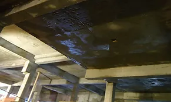
Cristalização profunda aplicada por projeção em subsolo com 1400 m2 (Morumbi)
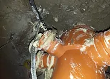
Injeção de Poliuretano em volta de um ralo (Morumbi)
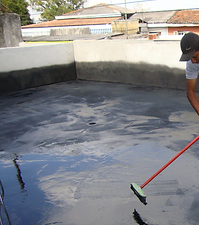
Impermeabilizações com membrana de polímeros elásticos moldada in loco (Condomínio na V. Mascote)
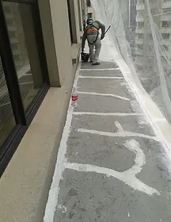
Recuperação e impermeabilização de marquise utilizando membrana de silicone, moldada in loco - Edif. Bovespa (Centro)
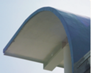
Impermeabilização com manta de PVC - Sociedade Bíblica do Brasil (ONSITE não mais aplica manta de PVC)
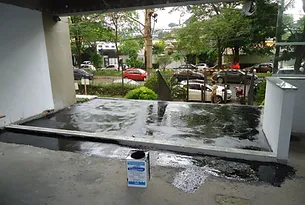
Impermeabilizações com membrana de polímeros elásticos moldada in loco (Condomínio no Butantã)
CONCRETO e CONCRETAGENS
Com equipamento próprio, a ONSITE traz um conceito novo - Bomba Dedicada - estacionadas nas obras a disposição no período de execução da estrutura.
ONDE USAR
Sites com pouco espaço ou dificuldades para ocupar a calçada
Empreendimentos com várias frentes concomitantes
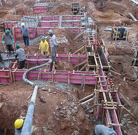
Cristalização profunda aplicada por projeção em subsolo com 1400 m2 (Morumbi)
Injeção de Poliuretano em volta de um ralo (Morumbi)
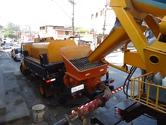
Impermeabilizações com membrana de polímeros elásticos moldada in loco (Condomínio na V. Mascote)
Recuperação e impermeabilização de marquise utilizando membrana de silicone, moldada in loco - Edif. Bovespa (Centro)
SERVIÇOS INCLUSOS
Frete e posicionamento
Lançamento, fixação e movimentações de linha de tubulação
Bombeamento
Nivelamento e acabamento de lajes
Preocupado com o aparecimento de sintomas de corrosão na estrutura?
No pé dos pilares do térreo e subsolos? Nas vigas das rampas e das juntas da garagem?
Está vazando pela impermeabilização do térreo?
E nas juntas e ralos? Há infiltrações pelas cortinas do subsolo? Ou pelas juntas? Ou no fundo da piscina?
Tem aparecido fissuras nas paredes do térreo?
Ou nos apartamentos dos últimos andares?
E como está o estado dos sistemas?
As prumadas hidráulicas de aço galvanizado? E a conservação e atualização dos quadros elétricos? Não está na hora de conferirmos a eficiência do aterramento do sistema de para-raios?
PROTEÇÃO GALVÂNICA DE ARMADURAS
Projeto: Especificação, Instalação e Acompanhamento de Proteção galvânica de armaduras de aço de base de pilar
Obra: Indústria de papel e celulose
Especificação: Reparo de concreto com uso de pastilhas Galvashield XP
Data: Set/2000
Resultado: Após 1 ano de monitoramento de potenciais galvânicos, conclui-se que há inversão de polaridade para fora da região do reparo apenas nas faces submetidas à ação direta de vapor de água. O fenômeno é levemente detectável até 5cm do limite do reparo.
Outros: Serviço realizado por L. Tula pela Fosroc com participação do Eng. J. Guimarães, então representante no estado de ES.
REVESTIMENTO EM POLIURÉIA TERMOPROJETADA
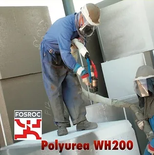
Projeto: Especificação e Acompanhamento de aplicação de revestimento de Poliureia
Obra: Indústria de papel e celulose
Especificação: Proteção superficial do concreto de bacia de contenção secundária de tanques de produtos químicos corrosivos
Data: Nov/2000
Resultado: Aplicação pioneira do material - Pure Polyurea com cura total em 18 segundos.
Outros: Serviço realizado por L. Tula pela Fosroc com participação do Eng. J. Guimarães, então representante no estado de ES.
COQUETEL DE ADITIVOS PARA MICROCONCRETO
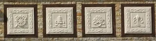
SRA - Shrinkage Reducing Admixture
HP - Hyper-plasticizers Admixtures
HR - Water Repellent Admixtures
Projeto: Determinação de traço, Fabricação de painéis de microconcreto armado com tela estrutural galvanizada
Resultado: Sem segregação, sem exsudação, sem retração, sem lixiviação. Após 10 anos condição excelente de conservação.
Outros: Serviço realizado por L. Tula pela Falcão Bauer.
REVESTIMENTO URETÂNICO DE PISO
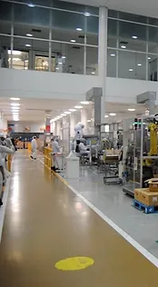
Projeto: Especificação e Gestão Técnica do reparo dos pisos com aplicação de revestimento de base uretânica
Obra: Indústria Cosmética
Especificação: Revestimento de alta resistência à abrasão e ação de álcool. Resina espatulável de cura rápida, que precisou de lapidação e acabamento com verniz Poliuretano
Data: Fev/2006
Resultado: Aplicação pioneira do material, que posteriormente teve versões autoadensáveis de cura normal.
Outros: Serviço realizado pela ONSITE para Método Engenharia.
CRISTALIZAÇÃO PROFUNDA DO CONCRETO
Projeto: Especificação e aplicação de cristalização profunda em lajes de baixo para cima para eliminar vazamentos e umidade sem mexer na impermeabilização
Obra: Condomínio na Consolação (Foto à esquerda)
Especificação: Laje sob jardim
Data: 2005
Resultado: Em vistoria realizada em 2017, observa-se desempenho ainda satisfatório.
Obra: Condomínio na Aclimação (Foto acima à direita)
Especificação: Laje de piscina e deck
Data: 2011
Resultado: Não houve reclamações. Não foi mais vistoriada.
Obra: Condomínio no Morumbi (Foto abaixo)
Especificação: Laje sob jardim
Data: 2015
Resultado: Não houve reclamações. Não foi mais vistoriada.
MASTRO DISTRIBUIDOR DE CONCRETO
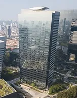
Projeto: Especificação e gestão na instalação de Mastro Distribuidor de concreto
Obra: Rochaverá Torre C - 131m (Foto da esquerda); Infinity Tower - 118m (Foto da direita)
Especificação: A poucos dias de ser instalado o primeiro mastro distribuidor de concreto na construção do REC Berrini, as precursoras Kaiobá-C&C ganharam o bombeamento com mastro, das duas obras da Método ocorridas concomitantemente.
Data: 2010
Resultado: Economia em mão-de-obra (o mastro tira pelo menos 8 pedreiros da laje) com aumento da velocidade de espalhamento do concreto.
Outros: Obras executadas pela Método Engenharia.
TRATAMENTO DE TELHADO COM MEMBRANA DE SILICONE
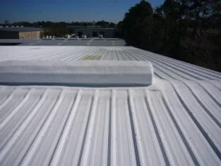
Projeto: Execução de reparo de telhado sobre loja de marca
Obra: Shopping na Castelo Branco
Especificação: Membrana de alta aderência à superfície metálica, de alta elasticidade e elevada reflectância
Data: 2016
Resultado: Eliminação de vazamentos, enrijecimento do telhado, melhoria do desempenho térmico e acústico.
Outros: Serviço realizado pela ONSITE para GE Brasil.
AVALIAÇÃO DO ESTADO DE CONSERVAÇÃO DE PONTE
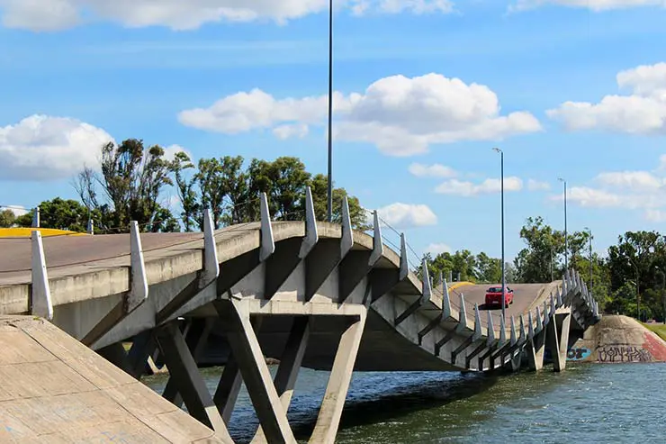
Projeto: Participação em Inspeção, e co-autoria em Relatório e Parecer Técnico
Obra: Ponte La Barra Leonel Viera - Ponta del Este, Uruguai
Especificação: Serviço realizado sob a coordenação técnica do Prof. Paulo Helene.
Data: 2000
Resultado: Avaliação de patologias tipo. Avaliação de cordoalhas protendidas de barras Roebling galvanizadas. Previsões de vida útil.
Outros: Contrato da pHD Engenharia.
MEMBRANA IMPERMEABILIZANTE DE PVC
Projeto: Especificação e gerenciamento da impermeabilização
Obra: Indústria gráfica em Alphaville-SP
Especificação: Membrana PVC colada, pinada e soldada nas emendas
Data: 2004
Resultado: Por ser uma aplicação pioneira apresentou determinado grau de dificuldade. Foram utilizados fixadores intermediários para combater possível retração, a qual não foi verificada.
RECUPERAÇÃO DE POSTES METÁLICOS DE ILUMINAÇÃO
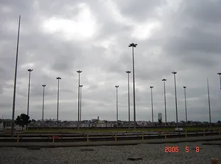
Projeto: Inspeção, Parecer Técnico, Projeto de Recuperação
Obra: Pátio Itaquera, Metrô SP
Especificação: Postes com 30m altura e 3m enterrados, apresentando corrosão na interfase solo-ar. Foi feito um reforço de colarinho, um enchimento com graute armado e melhora da estanqueidade da base. Para a inspeção poste a poste foi utilizado um endoscópio de fabricação própria.
Data: 2000
Resultado: Solução simples e barata para salvar 50 postes de iluminação que iriam ser substituídos no Terminal Itaquera do Metropolitano de SP.
Outros: Participação da Técnicas Especiais na execução da obra. Participação do Eng. Paulo Andrade no detalhamento de metálica.
RECUPERAÇÃO E IMPERMEABILIZAÇÃO DE FACHADA
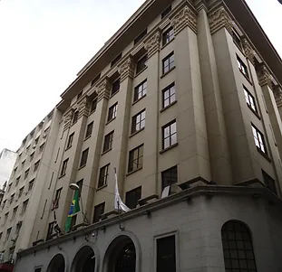
Projeto: Execução de obra de recuperação e impermeabilização utilizando membrana de silicone
Obra: Edifício da Bovespa e BM&F
Especificação: Membrana de Silicone GACO aplicada sobre o concreto sem proteção
Data: 2015
Resultado: Sem dificuldades, sem reclamação.
CONSTRUÇÃO E RETROFIT PARA ESCOLAS ESPECIAIS
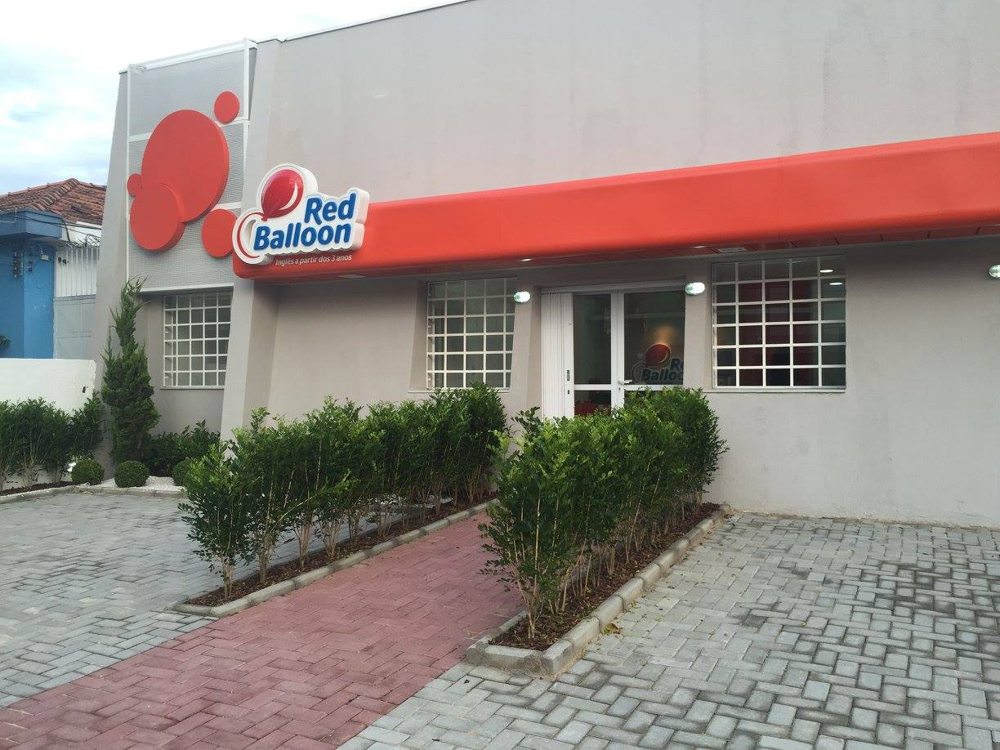
Projeto: Retrofit e/ou Construção
Obra: Escolas em Santana e Lapa, SP
Especificação: Contratos turn key
Data: 2016
Resultado: A garantia do sucesso foi a integração de competências e parcerias.
PAVIMENTAÇÃO DE RODOVIAS
Projeto: Gerenciamento e execução de obra de estrada
Obra: Alças de acesso em trevo rodoviário na Imigrantes, SP
Data: 2016
REFORÇO ESTRUTURAL COM PERFIS METÁLICOS
Projeto: Projeto e Execução de Reforços e Reparos estruturais
Obra: Indústria de Confecções no Ipiranga
Especificação: Reforços de viga e laje descarregam em perfis consoles até meio pilar. Reforços de lajes pelo lado superior, com acréscimo de seção.
Data: 2016
Resultado: Reforços foram executados sem prejuízo à produção da indústria.
REFORÇO DE VIGA POR ACRÉSCIMO DE SEÇÃO
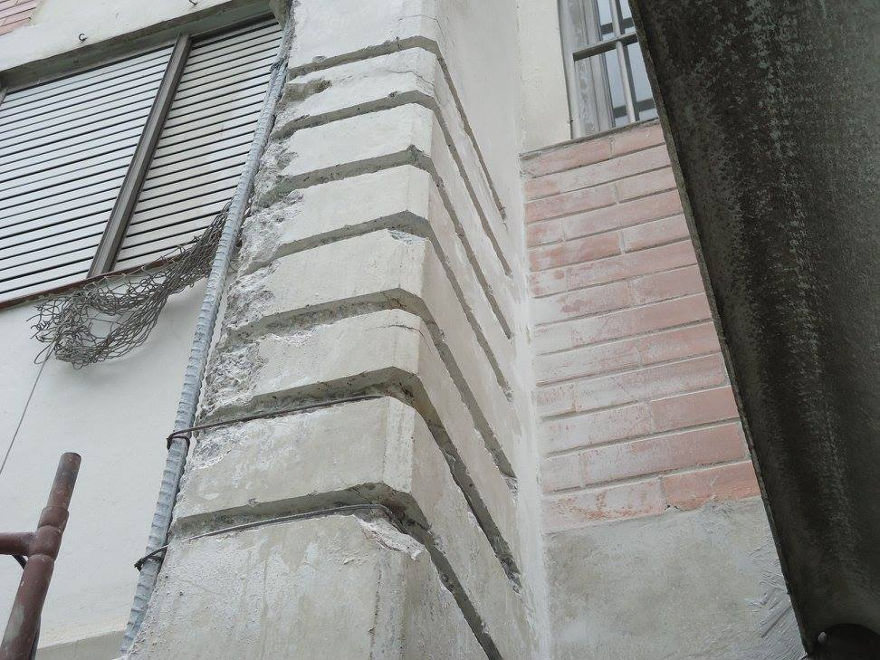
Projeto: Projeto e Execução de Reforço de vigas e lajes
Obra: Condomínio residencial no Morumbi
Especificação: Local precisou de reforço para instalação de sala de geradores


.jpg) Projeto e Consultoria
Projeto e Consultoria.jpg) Reparo, Reforço e Proteção
Reparo, Reforço e Proteção.jpg) Impermeabilização
Impermeabilização.jpg) Reformas e Obras em geral
Reformas e Obras em geral.jpg) Adequação de Sistemas de Instalações
Adequação de Sistemas de Instalações.jpg) Tecnologia de Concreto e Concretagem
Tecnologia de Concreto e Concretagem

.jpg)
.jpg)